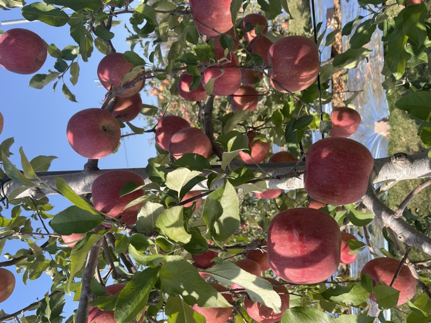
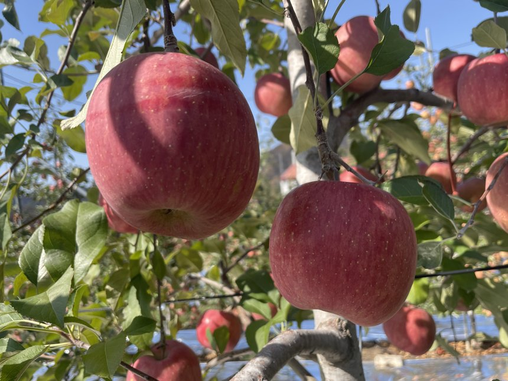
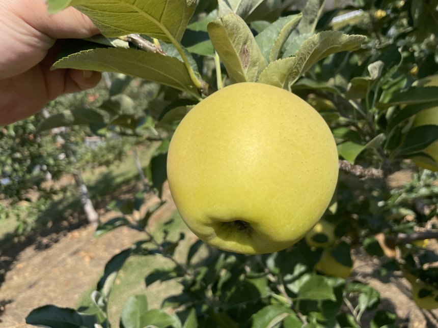
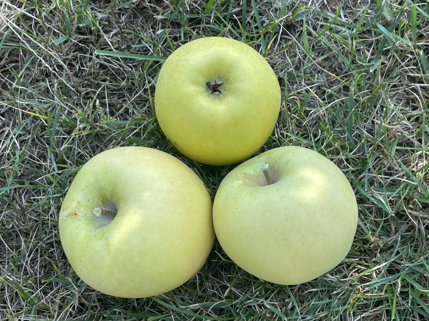
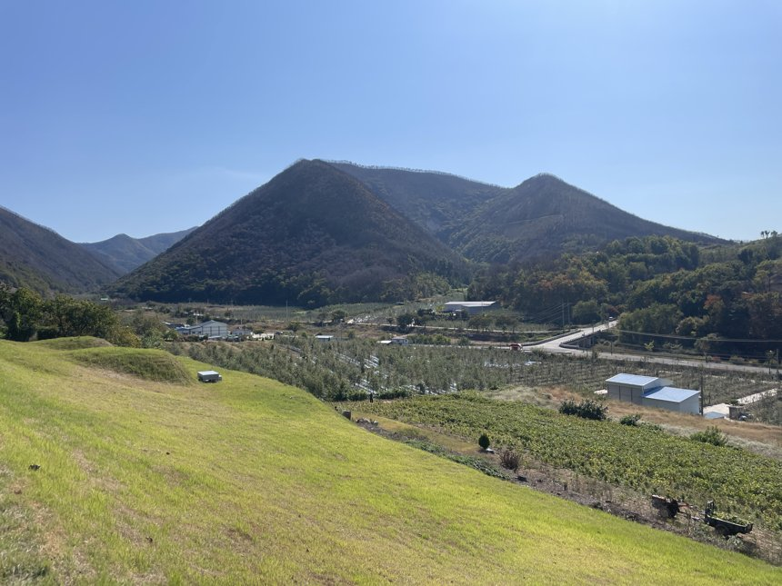

맑은 하늘과 깊은 골짜기에서 자란 사과를 농장에서 바로 보내드립니다.

낮에는 햇볕을 충분히 받고 밤에는 서늘한 바람을 맞으며 한 알 한 알 익었습니다.
겉은 고르게 붉고, 한입 베어 물면 아삭한 식감이 먼저 느껴집니다.

풋풋한 연두빛에서 노란빛으로 곱게 익은 사과입니다.
나무에 달린 모습 그대로 정직하게 보여드립니다.

수확한 노란 사과를 풀밭 위에 올려 찍었습니다.
표면의 작은 점은 사과가 자라며 생기는 자연스러운 모습입니다.

산으로 둘러싸인 골짜기, 해가 잘 드는 과수원에서 키웁니다.
농장에서 수확한 사과를 정성껏 골라 보냅니다.

| 상품명 | [입력] |
|---|---|
| 품종 | [입력: 빨강 / 노랑 품종명] |
| 중량·수량 | [입력] |
| 원산지 | [입력: 지역] |
| 생산자 | [입력] |
| 수확 시기 | [입력] |
| 보관 방법 | 서늘하고 그늘진 곳 또는 냉장 보관 |
| 배송 | [입력: 택배사, 발송일, 배송비] |